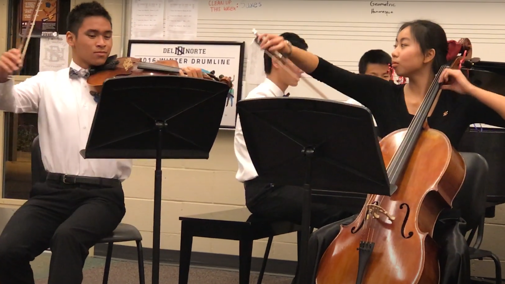

My Story
Hello Visitor
My name is Austin. I am currently a PhD candidate at the University of Michigan, Ann Arbor advised by Michael Wellman. Born and raised in San Diego, CA, I was happily spoiled by good weather, food, and company. In my free time, I enjoy cooking, climbing, and spending time with the people I love. I'm grateful to be involved in hobbies, communities, and a profession that I truly love, and I know many of my blessings are owed to my upbringing. Feel free to peruse as I document some milestones from high school to present.
Things I Love
- All food and lemonade
- Getting competitive (video/board games, sports)
- Composing, playing, and listening to music
Oh Dear Lord
- Insects, spiders, and the works
- High temps and humidity
- Velcro
The Olden Days
Swimmer Mindset
I was a competitive swimmer starting at 8 years old. I can't even fathom waking up at 4am these days, let alone sleep before 12am. Past me amazes me everyday. I participated in both my club (Pacific Swim) and high school swim teams. Thank you to Dan Peck, Owen Molenaar, and Di Molenaar for more than I can express.
Highlight: Medaling at Junior Nationals 2015. Exhilarating & emotional


Musician at Heart
Music became, and still is, one of my favorite hobbies as I studied classical piano, viola, and musical composition. If you see me, 90% chance I'll be playing, singing, or listening to music. I'm grateful to have played in my school's orchestra and the local New Youth Orchestra. Thank you to Homa Massih, Cecilia Bao, and Quyen Nguyen for imparting their invaluable knowledge and passion to me.
Highlight: Performing an original, satire Classical+Pop arrangement at a benefit concert.
Student: Always Learning
Somehow amidst all the chaos I managed to graduate. Academics really made me realize how much I liked numbers. Memorization destroyed me (learned the hard way). But, logic? Math? Puzzles? Get me in. Thank you to Jay Hendricks, Mark Lantsberger, and the inspiring Del Norte teaching staff for everything.
Highlight: Meeting my best friends

Go Bears
 Everybody look to the left.
Everybody look to the left.
 Everybody look to the right.
Everybody look to the right.
Go Blue
Can you feel that? Yeah!
My Loved Ones

I swear I have people!